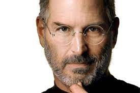

William Henry Gates
William Henry Gates III (born October 28, 1955) is an American business magnate, software developer,
investor, author, and philanthropist. He is a co-founder of Microsoft Corporation.[2][3] During his career
at Microsoft, Gates held the positions of chairman, chief executive officer (CEO), president and chief
software architect, while also being the largest individual shareholder until May 2014.[4]

Mark Elliot Zuckerberg
Mark Elliot Zuckerberg (/ˈzʌkərbɜːrɡ/; born May 14, 1984) is an American media magnate, internet
entrepreneur, and philanthropist. He is known for co-founding Facebook, Inc. and serves as its chairman,
chief executive officer, and controlling shareholder.[3][4] He also is a co-founder of the solar sail
spacecraft development project Breakthrough Starshot and serves as one of its board members.[5]

Steve Jobs
Jobs is widely recognized as a pioneer of the personal computer revolution of the 1970s and 1980s, along with
his early buisness partner and fellow Apple co-founder Steve Wozniak. Jobs was born in San Francisco,
California, and put up for adoption. He was raised in the San Francisco Bay Area.